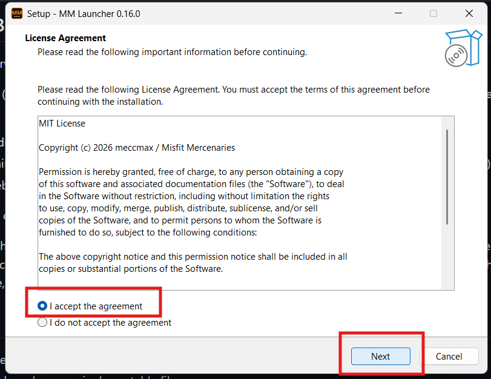
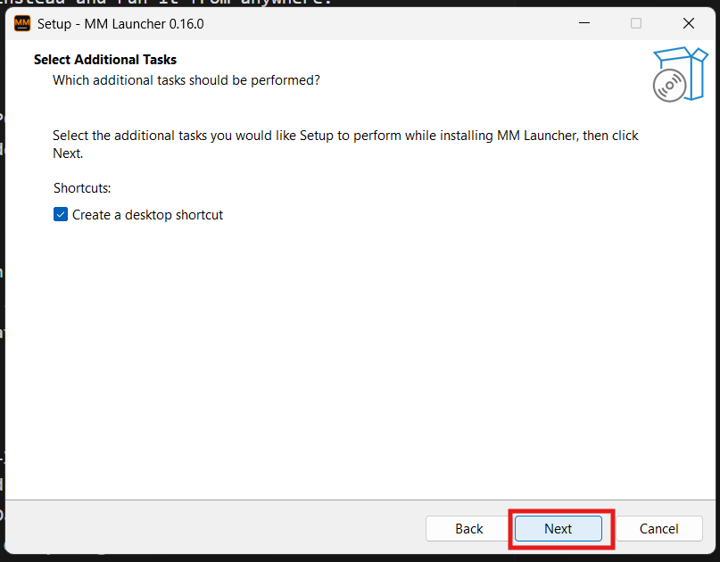
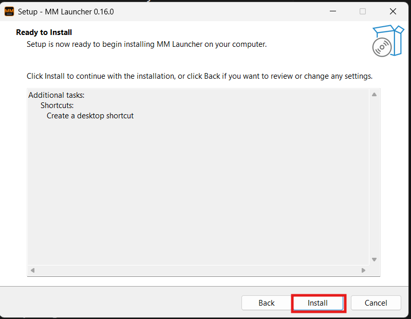
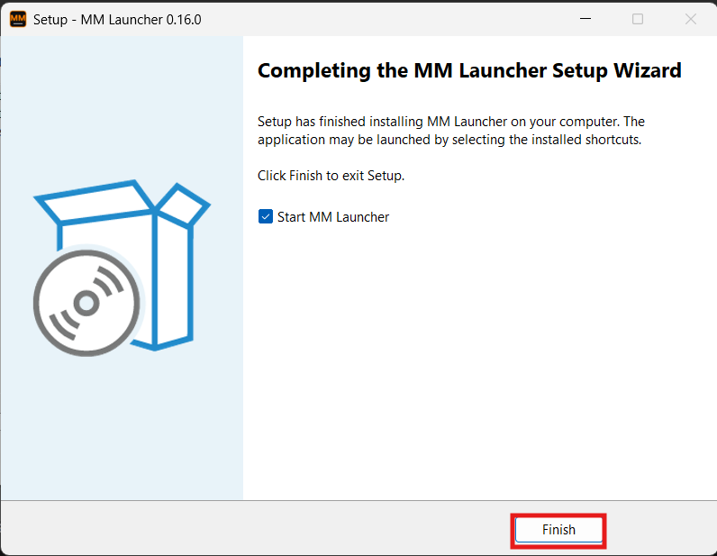

Install MM Launcher
The launcher finds every Misfit Mercenaries server, downloads and updates the mods for you through Steam, and starts DayZ connected to the server. Setup takes about two minutes.
-
01
Download the installer
Open the latest release on GitHub, scroll down to Assets and click MMLauncher-Setup.exe.
Prefer nothing installed? Download MMLauncher.exe instead. It's the same launcher as one file you can run from anywhere. Skip to step 5.
-
02
Tell your browser to keep it
Because the launcher is new and not code-signed yet, your browser may say it isn't commonly downloaded. In Edge, open the ··· menu next to the download and choose Keep. On the next box, click the arrow next to Delete and choose Keep anyway.
Why the warning? Windows warns about any program that isn't signed with a paid certificate and hasn't been downloaded by many people yet. The launcher's code is public on GitHub, and every update is checked against its published checksums before it installs. -
03
Open the file
Click Open file under the download (or double-click it in your Downloads folder). If a blue Windows protected your PC box appears, click More info, then Run anyway.
-
04
Run the setup
Select I accept the agreement and click Next. Keep Create a desktop shortcut ticked if you want one, click Next, then Install. When it's done, leave Start MM Launcher ticked and click Finish.

1 · Accept the agreement 
2 · Desktop shortcut 
3 · Install 
4 · Finish -
05
First start
Make sure Steam is running and signed in to the account that owns DayZ. The launcher asks two quick questions the first time:
- Your in-game name. DayZ only gets your name from its own launcher, so without this you'd spawn as "Survivor". Type the name you want and click Save name.
- Anonymous usage stats. Completely optional. Either answer is fine, and you can change it any time in Settings.
-
06
Pick a server and join
Our servers show up on the left on their own. Click one, then JOIN SERVER. The launcher downloads and updates every mod that server needs through Steam (Steam briefly shows you as "Playing DayZ" while it does), then starts DayZ connected to the server.
The first join downloads the whole mod pack, which can be 20–30 GB, so give it time. After that, only changed mods download.
Server has a password? Type it in, and tick Remember this password on this PC so you're not asked again. Show lets you check what you typed.
Good to know
It updates itself
When a new version is out, the launcher asks. Click Update and it restarts on the new version.
Rejoin after a crash
Tick "Rejoin automatically if DayZ crashes" and it puts you back on the server, waiting if it's restarting.
Free up space
The MODS tab shows mods no server uses or that you haven't played with in a month, and removes them in one click.
Find other servers
All servers lists every DayZ server. Search by mod name and filter by country, PvE, player count or AI.
Something broken?
Click Report a problem in the launcher. It sends staff the logs we need, with your PC's user name taken out.
Stuck on a step?
Ask in the Discord and someone will help. MM Launcher is optional: DZSA Launcher and the regular DayZ launcher work on our servers too.